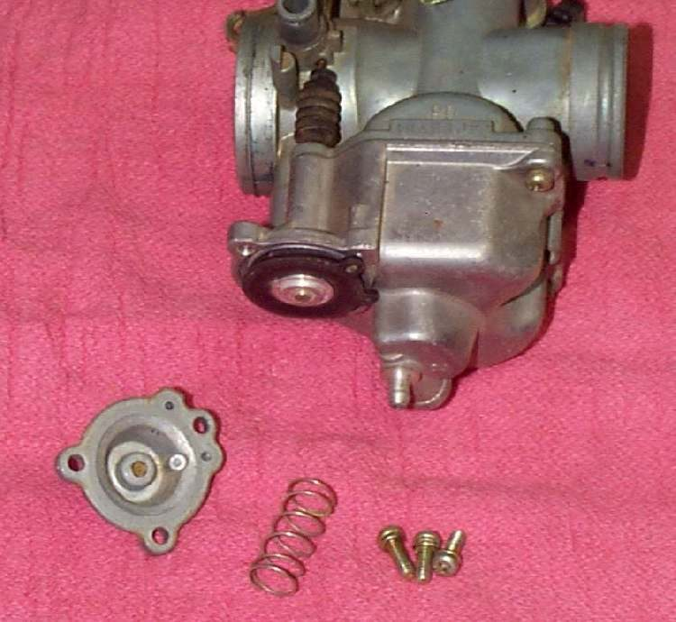

Some carburettors have an accelerator pump at the bottom. It gives a small extra squirt of fuel when the throttle opens quickly, which stops a hesitation. On a multi-cylinder bike usually only one carburettor has the pump, and it feeds the throats of the others through passages or tubing. A hard or torn pump diaphragm gives a stumble only when the throttle is snapped open.
Safety
- Fuel is flammable. Turn the tap off and work away from flames.
You need
- The carburettor, or at least the pump cover, within reach. On some bikes the carburettor must come off.
- A new pump diaphragm and spring from the carburettor maker if the old ones are damaged.
Steps
- Find the pump cover, a small round or oval cover with a few screws, at the base of the carburettor.
- Remove the screws. Note the order of cover, spring and diaphragm.
- Look at the diaphragm in good light. It should be soft, with no holes, cracks or hard patches. Stretch it lightly to look for pin holes.
- Check that the spring is straight and not rusted.
- Check that the pump lever or rod moves freely and returns on its own.
- If the pump feeds other carburettors through tubing, check that the tubing is not split or blocked.
- Refit the diaphragm, spring and cover. Do not overtighten the screws.
Check your work
- No hesitation when the throttle is opened quickly from a steady idle, once warm.
- No leak at the cover with the tap on.
If it did not fix the problem
- Check the slide diaphragm: Check the slide diaphragm.
- Clean the passages: Clean the carburettor.
- See Hesitation when the throttle opens.